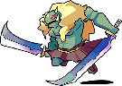

※ file:// で開いた場合、音声(mp3)はブラウザの制限で鳴らないことがあります。 その場合は python -m http.server 8000 → http://localhost:8000/fx_test.html で開いてください。 エフェクトの見た目は実際のゲームと同じCSS（screen合成・132%サイズ）で再現しています。
python -m http.server 8000